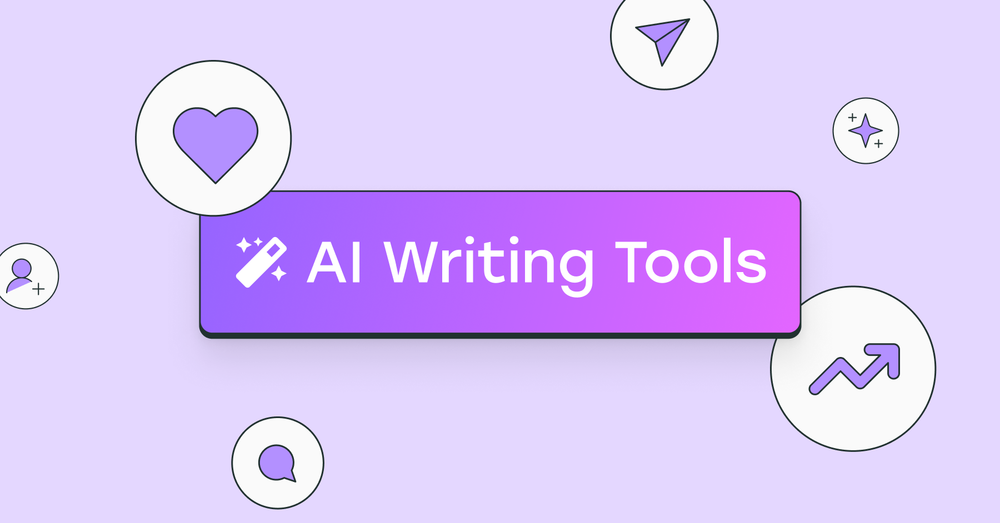

Top 10 Free AI Writing Tools (2025)
Artificial intelligence has transformed the way we write, edit, and create content. In this article, we explore the top 10 free AI writing tools available in 2025. Whether you’re a student, business owner, or content creator, these tools can help you save time and boost productivity.
1. ChatGPT (Free Version)
OpenAI’s ChatGPT is the most popular free AI writing tool. It can generate blog posts, summaries, and answer questions.
2. Claude AI
Claude by Anthropic is a friendly AI writing assistant, perfect for brainstorming and drafting long-form content.
3. Copy AI
Ideal for marketing copy, ads, and social media posts. Offers free credits every month.
4. Jasper Free Trial
A premium tool, but offers free trials and discounts for content creators.
5. Writesonic Free Plan
Useful for blog posts and website content, with a generous free plan.
6. Rytr
A lightweight AI writer with support for 30+ languages and creative content generation.
7. Quillbot
Popular for paraphrasing and grammar checking, great for students.
8. Simplified AI Writer
All-in-one tool that also includes design and video editing features.
9. Grammarly (AI Features)
Not just grammar — Grammarly now includes AI-powered rewriting and tone suggestions.
10. Notion AI
Perfect for productivity enthusiasts, integrates directly with Notion workspace.
Final Thoughts
These free AI writing tools can help you write faster, generate ideas, and improve your content. If you’re just starting, we recommend trying ChatGPT and Claude first. For marketers, Copy AI and Jasper are strong options.